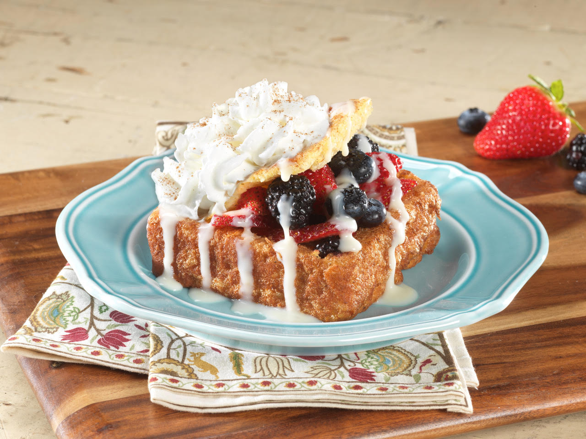

This Apple Bomb creation is made with our handmade pain de mie bread Stuff'D with apples, cinnamon, and brown sugar. It is covered with our signature cream and caramel sauces and topped with heavy whipped cream. Add a scoop of ice cream on top just for fun.
This Very Berry Blast creation is made with our handmade pain de mie bread Stuff'D with fresh blackberries, blueberries, and strawberries. It is covered with our signature cream and caramel sauces and topped with heavy whipped cream. Add a scoop of ice cream on top just for fun.
This Philly Cheesesteak creation is made with our handmade pain de mie bread Stuff'D with tender strips of beef, peepers, mushrooms, onions, and swiss cheese.
This Chicken Bacon Ranch creation is made with our handmade pain de mie bread Stuff'D with freshly grilled chicken, bacon, and cheesy ranch sauce. Add a sunny side up egg on top just for fun.